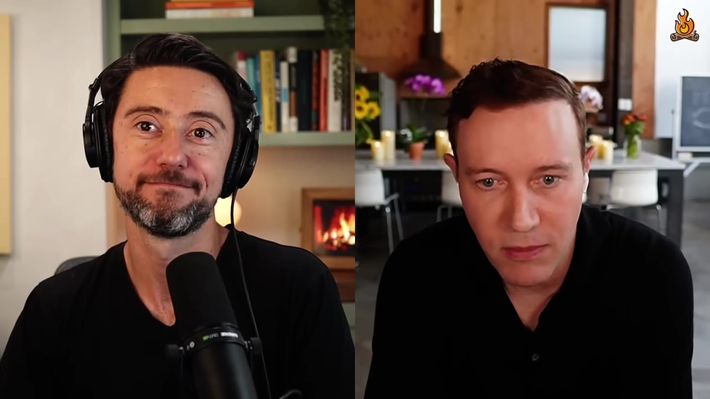
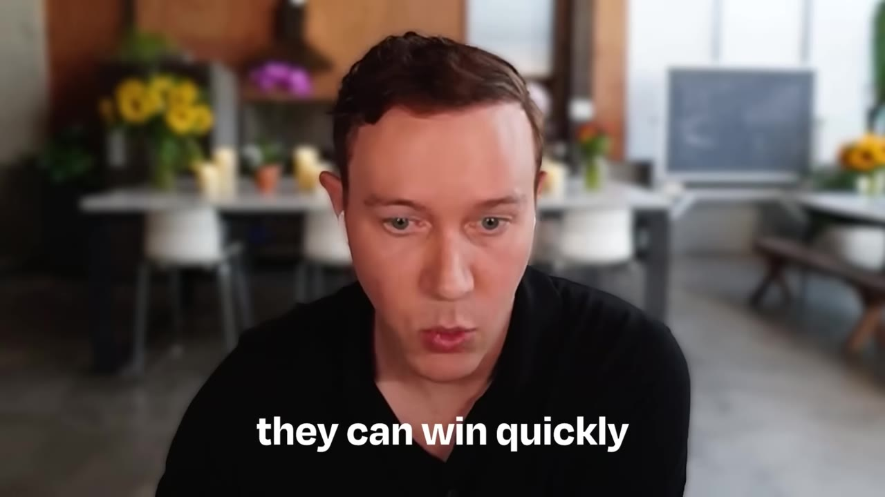
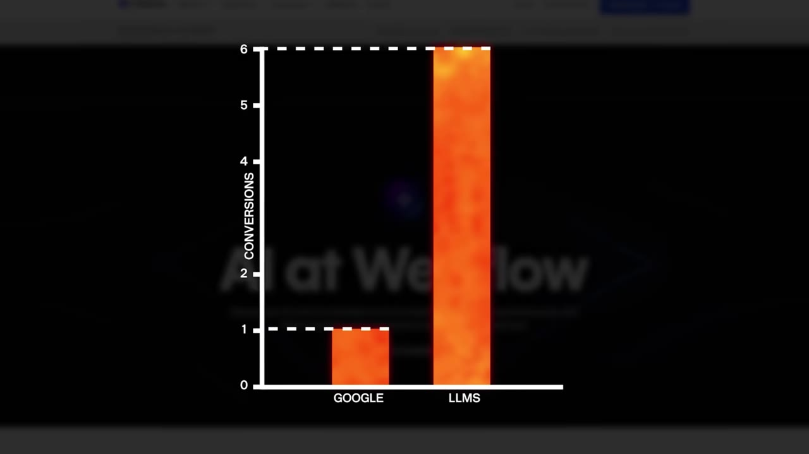
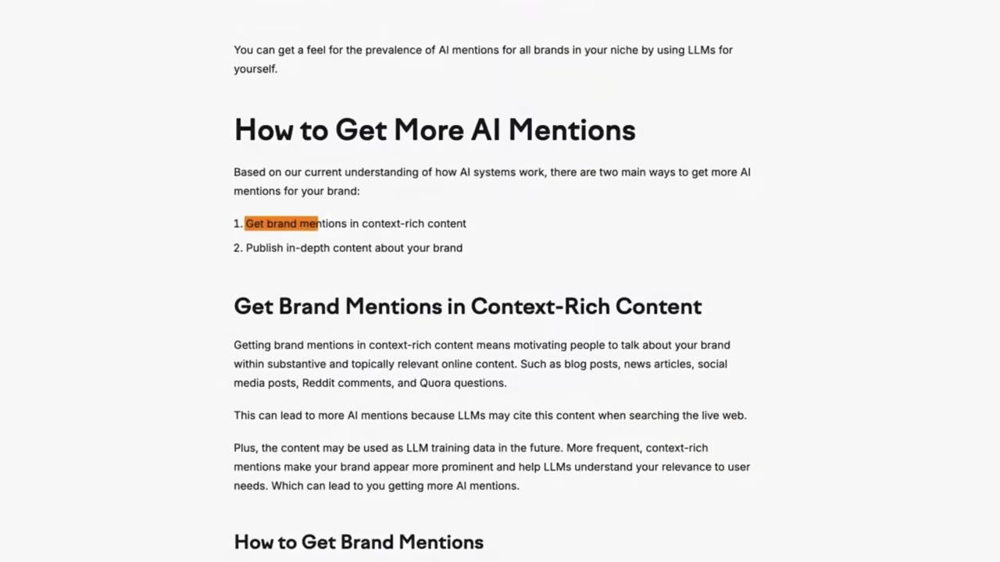
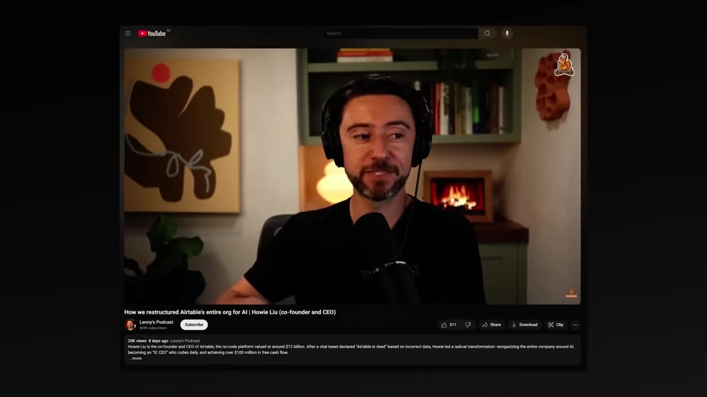
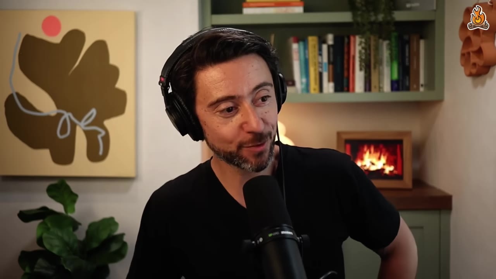
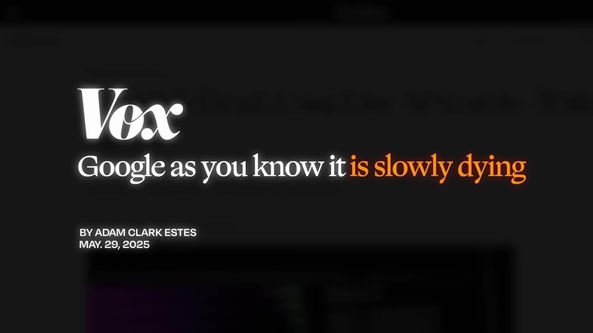

SEO veteran Ethan Smith, CEO of Graphite, breaks down answer engine optimization — getting your product to come up when people ask ChatGPT, Gemini, or Perplexity for a recommendation. It's intensely tactical, sometimes counterintuitive, and mostly an extension of SEO rather than a replacement for it.
Watch on YouTubePeople are moving from Google to ChatGPT, Claude, Gemini, and Perplexity for answers, and Google is bolting on AI Overviews and AI Mode in response. That's what creates AEO — answer engine optimization, or SEO for chatbots. But Ethan, who's done SEO for 18 years, is careful about the framing: this is the second-biggest change he's seen (the 2007 anti-spam Panda era was bigger), and it's a summarization of search with new inputs, not a clean break.

The core difference is counterintuitive. On Google, the #1 blue link wins. In an LLM, the answer is a summary of many citations — so the product mentioned most often across those citations wins, even when no single page ranks first.

That flips the usual advice. Ethan normally tells startups not to do SEO early, because you spend months building domain authority first. AEO is the opposite: a Reddit thread, a YouTube video, or a launch post can get you cited tomorrow. And the long tail — specific questions nobody would have typed into Google — is far bigger in chat, full of questions never asked before that you can win.
This isn't a vanity channel. The leads convert far better, because by the time someone clicks through they've had a multi-turn conversation that built real intent.

Web Flow saw a 6x conversion rate difference between LLM traffic and Google search traffic.— Ethan Smith
And it isn't small: Webflow now gets about 8% of signups from LLMs — already a top channel, and growing.
Split the work in two. On-site is traditional SEO plus answering the long tail — every follow-up about your features, integrations, use cases, languages. Off-site is earning citations, which fall into a few groups, each needing its own approach.

YouTube/Vimeo — easy to control, and wide open for unglamorous, high-value B2B topics nobody makes videos about.
Reddit and Quora, heavily cited and heavily policed (see next section).
pay-to-play and controllable — "want to be the best credit card? Pay Forbes." Dotdash Meredith (Investopedia, Good Housekeeping, All Recipes) is the most-cited of all.
B2B leans Tech Radar; commerce leans Glamour/Cosmopolitan; marketplaces lean Yelp/Eater/TripAdvisor.
Reddit is one of the most-cited sources in LLMs, and the #1 thing clients ask about. The obvious growth move — hundreds of fake accounts posting automated comments — doesn't work; the accounts get banned and the comments deleted. Reddit polices itself, and ChatGPT trusts it precisely because it's policed.

Find a thread… say who you are, say where you work, and then give a useful piece of information. And that works really well… you don't actually need 10,000 comments. Even five could be great.— Ethan Smith
The loop: (1) turn your and your competitors' paid-search money terms into questions — ChatGPT will convert them for you; (2) put them in an answer tracker and watch your share of voice, since answers vary run to run, so you're measuring a distribution, not one result; (3) see who's getting cited and build a strategy per group; (4) build landing pages matching the page types that show up, and answer every follow-up.
A rigorous study — running a validated AI detector against pre-ChatGPT common-crawl content — found only about 10–12% of the content in Google and ChatGPT results is fully AI-generated, and that purely automated, no-human-in-the-loop content doesn't work. AI-assisted, human-edited content is clearly where this goes.
If you ask what's the best flavor of ice cream, it will eventually say it's vanilla and it's only vanilla and there's no other flavor of ice cream.— Ethan Smith
That's model collapse: feed the derivatives back in and the wisdom-of-the-crowd that makes a summary good shrinks to one impoverished opinion.
Ethan's most underused tip: chat users constantly ask "does your product do X / integrate with Y?" — which is exactly what a help center answers, and exactly what SEO teams ignore. Three fixes: move it from a subdomain to a subdirectory, cross-link the articles, and fill in the tail — the obscure use cases nobody else covers, so you become the only citation.

His example: "which meeting-transcription tool integrates with Looker?" None do directly — but Otter via Zapier to BigQuery to Looker does. Nobody had written that up, so whoever does wins that question.
The space is unusually full of misinformation, partly because "everything is new and different" sells tools. The reality: SEO and AEO overlap heavily, Google traffic to publishers is flat-to-up rather than dying, and attribution is genuinely murky — people see you in an answer, then open a new tab and type your brand into Google, so it shows up as branded search or direct traffic.

It's not your choice whether to play the game. You are playing the game whether you want to or not.— Ethan Smith
You can block LLMs from training on your content (robots.txt, separate user agents) — but blocking indexing entirely just hands the citations to your competitors.